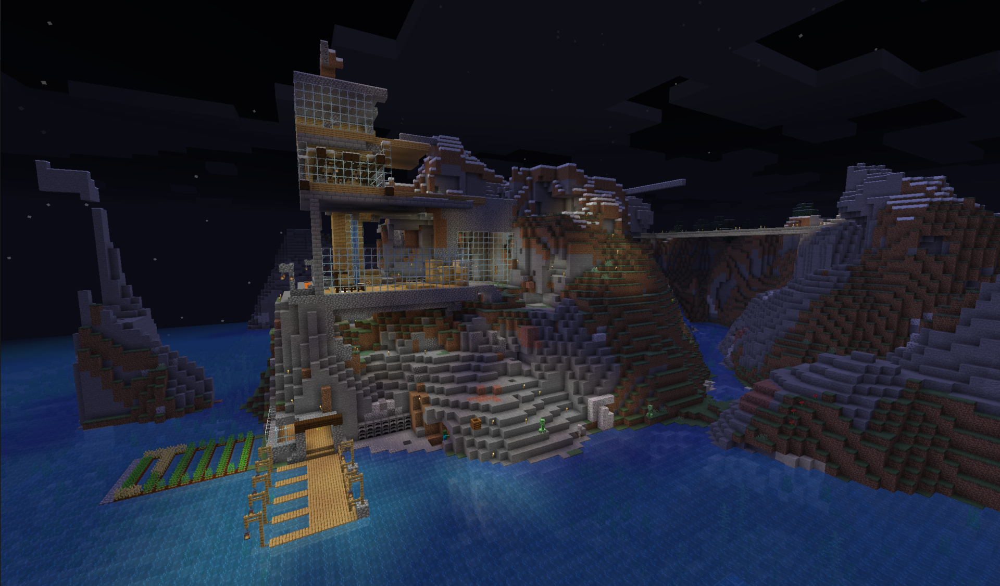
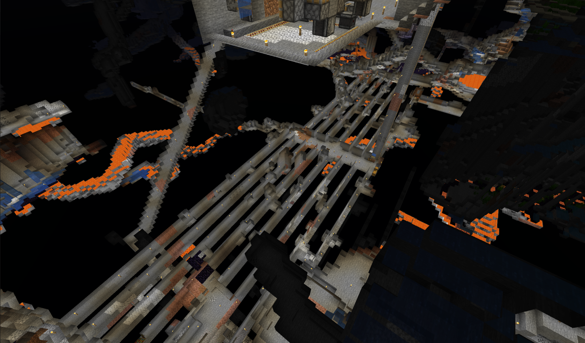
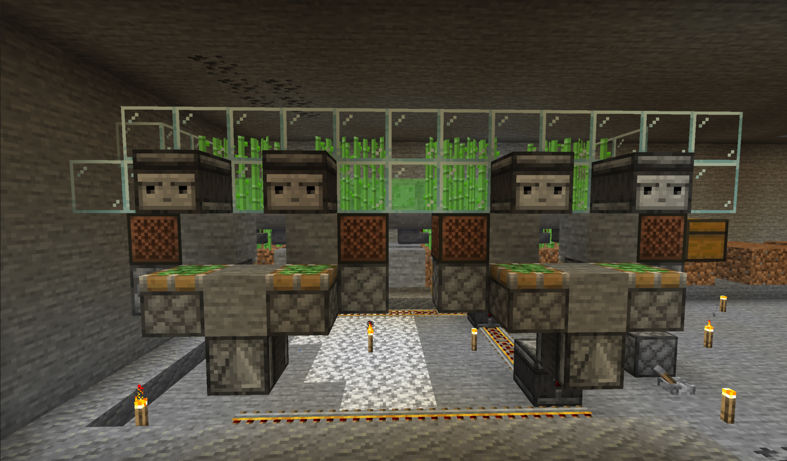
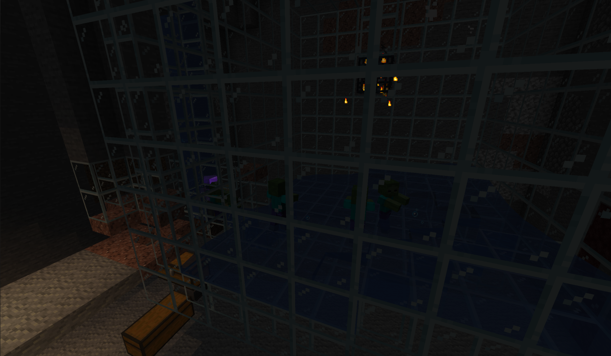

Version: 1.15.2
Para jugar descarga el juego y conéctate usando:
minecraft.jediupc.com
Hasta 128 jugadores simultaneos
Una iniciativa de JEDI Junior Empresa
Motivación
El objetivo de este servidor es pasarlo bien durante estos días de confinamiento con los estudiantes de la FIB y los miembros de JEDI. Es un servidor multijugador con plugins en modo supervivencia.
¿Cómo entrar?
En el menú principal, accedes a la opción "Mulijugador" y añades un nuevo servidor. Especifica la IP como minecraft.jediupc.com.
Link copiado!
Cosas a destacar
Para hacer el gameplay más interesante, hemos añadido muchos plugins originales, entre los cuales podemos destacar ...
- LandClaiming: puedes proteger tus tierras!
- Dynmap: puedes ver en vivo lo que está pasando en el mapa!
- SetHome: puedes crear, borrar y teletransportarte a todas tus casas!
- MarriageMaster: puedes casarte! (= Compartes inventario)
Lista completa de plugins disponibles
- AUpdater
- Dead Chest
- Dependency Downloader
- Dynmap
- Holographic Displays
- Land Claiming
- Login Security
- Marriage Master
- Multiverse-Core
- Nametag Edit
- Plug Man
- Plugin Constructor API
- Plugin Metrics
- Set Homes
- Shopkeepers
- Timber
- Vault
- World Border
- World Edit
- World Guard
- bStats
Reglas del juego
Normas generales
- No Griefing: está totalmente prohibido grifear, es decir romper o modificar de alguna forma una construcción de otro jugador sin su consentimiento. También está prohibido “grifear por engaño”. Esto se refiere a que los jugadores no pueden tratar de meter en problemas a otros jugadores al engañarlos u obligarlos a destruir estructuras en un intento de hacer que se le advierta o banee.
- No Spamming.
- No Advertising: está prohibido utilizar el servidor para hacer marketing de otro producto y/o servidor.
- No Cursing/No Constant Cursing.
- No Trolling/Flaming.
- No Banned Items (Tekkit Rule).
- No pedir OP, Ranks, o Item.
- Respetar a todos los jugadores.
- Obedecer al staff y la ley.
- No hacer comentarios racistas i/o sexistas.
- No Mods/Hacks.
- No escribir en mayúsculas.
Construcciones prohibidas
- Están totalmente prohibidas las granjas automáticas y grinders de tamaño desproporcionado o que generen demasiado lag.
- Queda prohibido hacer cualquier tipo de granja/grinder en el mundo TheEnd.
- Prohibido hacer construcciones inapropiadas (por ejemplo construcciones explícitamente sexuales, esvásticas, usar el terreno para poner mensajes dejar andamios, torres de un solo bloque, arboles volando… etc).
Política de sanciones
- En la mayoría de los casos, se intentará establecer comunicación antes de una sanción. Sin embargo, en ciertos periodos en los que el servidor puede estar muy ocupado y, dependiendo de la razón de la sanción, tal vez no se te sea comunicado inmediatamente.
- Tú eres responsable de tu cuenta y las sanciones no se anularan alegando que otro cometió la infracción con tu cuenta.
- Es tarea de moderadores imponer las sanciones, no te tomes la justícia por tu mano.
- Los administradores y moderadores son la máxima autoridad del servidor y velan por el buen funcionamiento de este, hazles caso en lo que te digan, desobedecer implica sanción.
Lugares emblemáticos




Si quieres presumir de tu lugar emblemático y que aparezca aquí, cuélgalo en RRSS mencionando a JEDI!